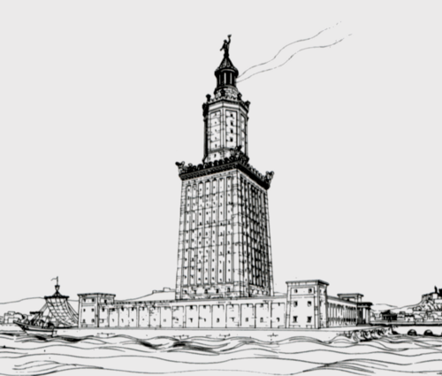

Latarnia morska na Faros - Pierwsza Tego Typu
Zbudowana na wyspie Faros u wybrzeży Aleksandrii, była jedną z najwyższych budowli starożytnego świata, osiągającą prawdopodobnie ponad 100 metrów wysokości. Służyła jako latarnia morska i punkt orientacyjny dla żeglarzy na Morzu Śródziemnym.
Była to jednocześnie najmłodsza i jedna z najdłużej istniejących cudów (po Piramidzie Cheopsa), zniszczona przez serię silnych trzęsień ziemi, a jej resztki zostały włączone do średniowiecznej fortecy.